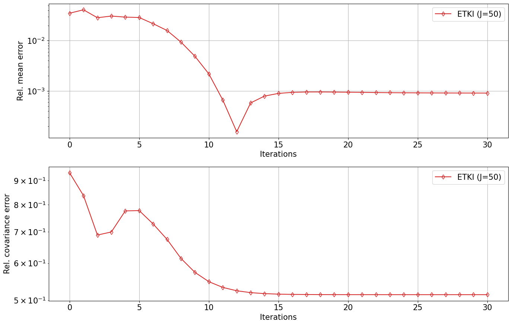
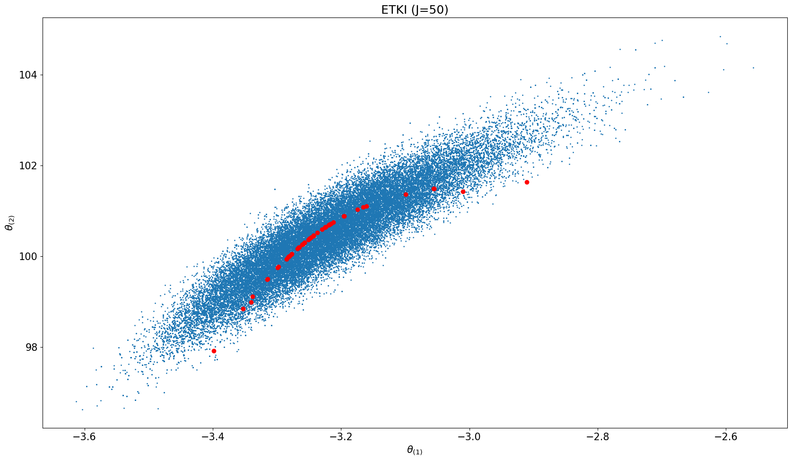
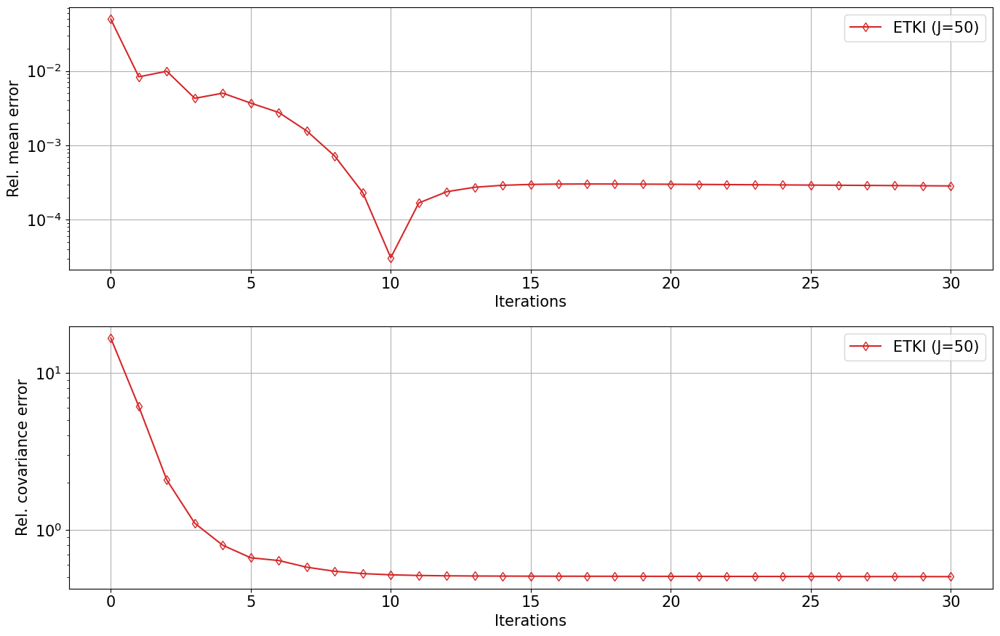
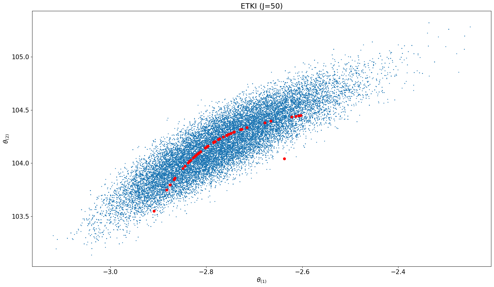

import numpy as np
from typing import Callable, Any
# This function can, in princiople, be parallelized... see original "KI.ipynb"
def ensemble(s_param: Any, θ_ens: np.ndarray, forward: Callable) -> np.ndarray:
N_ens, N_θ = θ_ens.shape
N_y = s_param.N_y
g_ens = np.zeros((N_ens, N_y))
for i in range(N_ens):
θ = θ_ens[i, :]
g_ens[i, :] = forward(s_param, θ)
return g_ens21 Kalman Inversion with an Ensemble Transform Filter
We solve a nonlinear, two-parameter inverse problem for a 1-D elliptic equation using mean-field ensemble Kalman inversion based on a square-root filter.
NOTE
This version uses the mean-field approach.
21.1 2-Parameter Elliptic Equation : Probabilistic Approach
Consider the one-dimensional elliptic boundary-value problem
\[ -\frac{d}{dx}\Big(\exp(\theta_{(1)}) \frac{d}{dx}p(x)\Big) = 1, \qquad x\in[0,1] \]
with boundary conditions \[p(0) = 0, \qquad p(1) = \theta_{(2)}.\]
The exact solution for this problem is given by
\[ p(x) = \theta_{(2)} x + \exp(-\theta_{(1)})\Big(-\frac{x^2}{2} + \frac{x}{2}\Big). \]
21.2 Inverse Problem
The inverse problem: given the observations \(y = (p(x_1),\,p(x_2))^T\) at \(x_1=0.25\) and \(x_2=0.75,\) solve for \(\theta = (\theta_{(1)},\, \theta_{(2)})^T.\)
The Bayesian inverse problem, “given observations \(y,\) find the parameter \(\theta\)”, is formulated as
\[ y = \mathcal{G}(\theta) + \eta \qquad \textrm{and} \qquad \mathcal{G}(\theta) = \begin{bmatrix} p(x_1, \theta)\\ p(x_2, \theta) \end{bmatrix}, \] where \(\mathcal{G}(\theta)\) is the forward model operator, and the prior is \(\mathcal{N}([0, 100]^T, I)\). We consider two scenarios
- Well-posed case：the observation is \(y=[27.5, 79.7]^T\) with observation error \(\eta\sim\mathcal{N}(0, 0.1^2 I)\).
- Ill-posed case：the observation is \(y=[27.5]\) with observation error \(\eta\sim\mathcal{N}(0, 0.1^2 I)\).
21.3 Kalman Inversion by the Mean Field Method
In the code below (see update_ensemble), the following mean-field formulation is used.
21.3.1 Prediction
\[ \hat{\theta}^j_{n+1} = {m}_{n} + \sqrt{\frac{1}{1-\Delta \tau}} \left( \theta_n^j - m_n \right), \]
where \(m_n\) is the mean of \(\theta_n,\) the analyzed update (or initial condition, if \(n=0\)), \(\Delta \tau = 0.5,\) and \(j=1, \ldots, J\) is the ensemble member index.
21.3.2 Analysis
TBC
21.4 Ensemble Kalman Inversion
Define the EKI class. Can be applied to three types of ensemble filters:
- EKI
- EAKI
- ETKI
This one is for an ensemble transform filter, of square-root type, the ETKI. It uses the mean-field approach.
import numpy as np
from scipy import linalg
from scipy.stats import norm
class EKIObj:
def __init__(self, theta_names, N_ens, theta0_mean, theta_theta0_cov_sqrt,
y, Sigma_eta, delta_t):
self.theta_names = theta_names
self.theta = [theta0_mean]
self.y_pred = []
self.y = y
self.Sigma_eta = Sigma_eta
self.N_ens = N_ens
self.N_theta = len(theta0_mean)
self.N_y = len(y)
self.delta_t = delta_t
self.iter = 0
print(f"Start ETKI on the mean-field stochastic dynamical system for Bayesian inference")
# Generate initial ensemble
self.theta = [self.MvNormal_sqrt(N_ens, theta0_mean, theta_theta0_cov_sqrt)]
def MvNormal_sqrt(self, N_ens, theta_mean, theta_theta_cov_sqrt):
N_theta, N_r = theta_theta_cov_sqrt.shape
theta = np.zeros((N_ens, N_theta))
for i in range(N_ens):
theta[i, :] = theta_mean + theta_theta_cov_sqrt @ norm.rvs(size=N_r)
return theta
def update_ensemble(self, ens_func):
self.iter += 1
theta = self.theta[-1]
Sigma_nu = (1/self.delta_t) * self.Sigma_eta
# Prediction step
#################
theta_p = np.zeros_like(theta)
theta_mean = np.mean(theta, axis=0)
theta_p_mean = theta_mean
for j in range(self.N_ens):
theta_p[j] = theta_p_mean + np.sqrt( 1/(1 - self.delta_t) ) * (theta[j] - theta_mean)
theta_p_mean = np.mean(theta_p, axis=0)
# Analysis step
###############
g = ens_func(theta_p)
g_mean = np.mean(g, axis=0)
# define anomalies:
Z_p_t = theta_p - theta_p_mean
Z_p_t /= np.sqrt(self.N_ens - 1)
Y_p_t = g - g_mean
Y_p_t /= np.sqrt(self.N_ens - 1)
X = Y_p_t @ np.linalg.inv(self.Sigma_eta) @ Y_p_t.T
U, S, Vt = np.linalg.svd(X)
P, Gamma = U, S
theta_mean = theta_p_mean + Z_p_t.T @ (P @ (np.linalg.inv(np.diag(Gamma) + np.eye(len(Gamma))) @ (P.T @ (Y_p_t @ (np.linalg.inv(self.Sigma_eta) @ (self.y - g_mean))))))
# filter_type == "ETKI":
T = P @ np.diag(1 / np.sqrt(Gamma + 1)) @ P.T
theta = np.array([theta_p[j] - theta_p_mean for j in range(self.N_ens)])
theta = T.T @ theta
theta += theta_mean
self.theta.append(theta)
self.y_pred.append(g_mean)
def EKI_Run(s_param, forward,
theta0_mean, theta_theta0_cov_sqrt,
N_ens,
y, Sigma_eta,
Delta_t,
N_iter):
theta_names = s_param.θ_names ##s_param.theta_names
ekiobj = EKIObj(theta_names,
N_ens,
theta0_mean, theta_theta0_cov_sqrt,
y, Sigma_eta,
Delta_t)
def ens_func(theta_ens):
return ensemble(s_param, theta_ens, forward)
for i in range(N_iter):
##update_ensemble(ekiobj, ens_func)
ekiobj.update_ensemble(ens_func)
return ekiobjimport numpy as np
from typing import List
class Setup_Param:
def __init__(self, θ_names: List[str], N_θ: int, N_y: int):
self.θ_names = θ_names
self.N_θ = N_θ
self.N_y = N_y
def create_setup_param(N_θ: int, N_y: int) -> Setup_Param:
return Setup_Param(["θ"], N_θ, N_y)
def forward(s_param: Setup_Param, θ: List[float]) -> List[float]:
x1, x2 = 0.25, 0.75
θ1, θ2 = θ
def p(x):
return θ2 * x + np.exp(-θ1) * (-x**2/2 + x/2)
return [p(x1), p(x2)]
def forward_aug(s_param: Setup_Param, θ: List[float]) -> List[float]:
x1, x2 = 0.25, 0.75
θ1, θ2 = θ
def p(x):
return θ2 * x + np.exp(-θ1) * (-x**2/2 + x/2)
return [p(x1), p(x2), θ1, θ2]
def forward_illposed(s_param: Setup_Param, θ: List[float]) -> List[float]:
x1 = 0.25
θ1, θ2 = θ
def p(x):
return θ2 * x + np.exp(-θ1) * (-x**2/2 + x/2)
return [p(x1)]
def forward_illposed_aug(s_param: Setup_Param, θ: List[float]) -> List[float]:
x1 = 0.25
θ1, θ2 = θ
def p(x):
return θ2 * x + np.exp(-θ1) * (-x**2/2 + x/2)
return [p(x1), θ1, θ2]
def construct_cov(x: np.ndarray) -> np.ndarray:
x_mean = np.mean(x, axis=0)
N_ens, N_x = x.shape
x_cov = np.zeros((N_x, N_x))
for i in range(N_ens):
x_cov += np.outer(x[i,:] - x_mean, x[i,:] - x_mean)
return x_cov / (N_ens - 1)#import numpy as np
import matplotlib.pyplot as plt
from scipy.stats import multivariate_normal
import random
def Elliptic_Posterior_Plot(problem_type="under-determined", μ0=np.array([0.0, 100.0]),
Σ0=np.array([[1.0**2, 0.0], [0.0, 1.0**2]]), Nt=30, N_ens=100, file_name=""):
print("start Elliptic_Posterior_Plot")
np.random.seed(128)
N_θ = 2
FT = float
# observation and observation error covariance
if problem_type == "under-determined":
y = np.array([27.5])
Σ_η = np.array([[0.1**2]])
forward_func = forward_illposed
forward_func_aug = forward_illposed_aug
else:
y = np.array([27.5, 79.7])
Σ_η = np.diag([0.1**2] * 2)
forward_func = forward
forward_func_aug = forward_aug
N_y = len(y)
##s_param = Setup_Param(N_θ, N_y)
s_param = Setup_Param("θ",N_θ, N_y)
# compute posterior distribution by MCMC
def logρ(θ):
return log_bayesian_posterior(s_param, θ, forward_func, y, Σ_η, μ0, Σ0)
step_length = 1.0
##N_iter_MCMC, n_burn_in = 5000000, 1000000
N_iter_MCMC, n_burn_in = 1000000, 200000
print("start RWMCMC")
us = RWMCMC_Run(logρ, μ0, step_length, N_iter_MCMC)
θ_post = np.mean(us[n_burn_in:], axis=0)
Σ_post = np.cov( us[n_burn_in:].T)
N_iter = Nt
s_param_aug = Setup_Param("θ", N_θ, N_y + N_θ)
θ0_mean = μ0
θθ0_cov = Σ0
θθ0_cov_sqrt = np.sqrt(Σ0)
y_aug = np.concatenate([y, μ0])
Σ_η_aug = np.block([[Σ_η, np.zeros((N_y, N_θ))],
[np.zeros((N_θ, N_y)), Σ0]])
# mean-field model:
Δt = 0.5
print("start ETKI")
etki_obj = EKI_Run(s_param_aug, forward_func_aug, θ0_mean, θθ0_cov_sqrt,
N_ens, y_aug, Σ_η_aug, Δt, N_iter)
etki_errors = np.zeros((N_iter+1, 2))
for i in range(N_iter+1):
etki_errors[i, 0] = np.linalg.norm(np.mean(etki_obj.theta[i], axis=0) - θ_post) / np.linalg.norm(θ_post)
etki_errors[i, 1] = np.linalg.norm(construct_cov(etki_obj.theta[i]) - Σ_post) / np.linalg.norm(Σ_post)
i = Nt + 1
ites = np.arange(Nt + 1)
fig, ax = plt.subplots(nrows=2, ncols=1, sharex=False, sharey="row", figsize=(14, 9))
ax[0].semilogy(ites, etki_errors[:, 0], "-d", color="C3", fillstyle="none", label=f"ETKI (J={N_ens})")
ax[0].set_xlabel("Iterations")
ax[0].set_ylabel("Rel. mean error")
ax[0].grid(True)
ax[0].legend(bbox_to_anchor=(1.0, 1.0))
ax[1].semilogy(ites, etki_errors[:, 1], "-d", color="C3", fillstyle="none", label=f"ETKI (J={N_ens})")
ax[1].set_xlabel("Iterations")
ax[1].set_ylabel("Rel. covariance error")
ax[1].grid(True)
ax[1].legend(bbox_to_anchor=(1.0, 1.0))
plt.tight_layout()
#plt.savefig(f"Elliptic-{problem_type}-error_ETKF.pdf")
# plot results at the last iteration
ncols = 1
fig, ax = plt.subplots(ncols=ncols, nrows=1, sharex=True, sharey=True, figsize=(17, 10))
for icol in range(ncols):
# plot MCMC results
everymarker = 10
ax.scatter(us[n_burn_in::everymarker, 0], us[n_burn_in::everymarker, 1], s=1)
ites = N_iter ##+ 1
# scatter ETKI
ax.scatter(etki_obj.theta[ites][:, 0], etki_obj.theta[ites][:, 1], color="r")
ax.set_title(f"ETKI (J={N_ens})")
ax.set_xlabel(r'$\theta_{(1)}$')
ax.set_ylabel(r'$\theta_{(2)}$')
plt.tight_layout()
plt.show()21.5 Random Walk MCMC
Use the emcee approach…
#import numpy as np
from scipy import stats
def log_bayesian_posterior(s_param, θ, forward, y, Σ_η, μ0, Σ0):
Gu = forward(s_param, θ)
Φ = -0.5 * np.dot(np.dot((y - Gu).T, np.linalg.inv(Σ_η)), (y - Gu)) - \
0.5 * np.dot(np.dot((θ - μ0).T, np.linalg.inv(Σ0)), (θ - μ0))
return Φ
def log_likelihood(s_param, θ, forward, y, Σ_η):
Gu = forward(s_param, θ)
Φ = -0.5 * np.dot(np.dot((y - Gu).T, np.linalg.inv(Σ_η)), (y - Gu))
return Φ
def RWMCMC_Run(log_bayesian_posterior, θ0, step_length, n_ite, seed=11):
np.random.seed(seed)
N_θ = len(θ0)
θs = np.zeros((n_ite, N_θ))
fs = np.zeros(n_ite)
θs[0, :] = θ0
fs[0] = log_bayesian_posterior(θ0)
for i in range(1, n_ite):
θ_p = θs[i-1, :]
θ = θ_p + step_length * np.random.normal(0, 1, N_θ)
fs[i] = log_bayesian_posterior(θ)
α = min(1.0, np.exp(fs[i] - fs[i-1]))
if α > np.random.uniform(0, 1):
θs[i, :] = θ
else:
θs[i, :] = θ_p
fs[i] = fs[i-1]
return θs
def PCN_Run(log_likelihood, θ0, θθ0_cov, β, n_ite, seed=11):
np.random.seed(seed)
N_θ = len(θ0)
θs = np.zeros((n_ite, N_θ))
fs = np.zeros(n_ite)
θs[0, :] = θ0
fs[0] = log_likelihood(θ0)
for i in range(1, n_ite):
θ_p = θs[i-1, :]
θ = np.sqrt(1 - β**2) * θ_p + β * np.random.multivariate_normal(np.zeros(N_θ), θθ0_cov)
fs[i] = log_likelihood(θ)
α = min(1.0, np.exp(fs[i] - fs[i-1]))
if α > np.random.uniform(0, 1):
θs[i, :] = θ
else:
θs[i, :] = θ_p
fs[i] = fs[i-1]
return θs
def emcee_Propose(θ_s, θ_c, a=2.0):
Ns, N_θ = θ_s.shape
zz = ((a - 1.0) * np.random.uniform(0, 1, Ns) + 1)**2.0 / a
factors = (N_θ - 1.0) * np.log(zz)
rint = np.random.randint(0, Ns, Ns)
return θ_c[rint, :] - (θ_c[rint, :] - θ_s) * zz[:, np.newaxis], factors
def emcee_Run(log_bayesian_posterior, θ0, n_ite, random_split=True, a=2.0, seed=11):
np.random.seed(seed)
N_ens, N_θ = θ0.shape
assert N_ens >= 2*N_θ
assert N_ens % 2 == 0
θs = np.zeros((n_ite, N_ens, N_θ))
fs = np.zeros((n_ite, N_ens))
θs[0, :, :] = θ0
for k in range(N_ens):
fs[0, k] = log_bayesian_posterior(θ0[k, :])
nsplit = 2
N_s = N_ens // 2
all_inds = np.arange(N_ens)
inds = all_inds % nsplit
log_probs = np.zeros(N_s)
for i_t in range(1, n_ite):
if random_split:
np.random.shuffle(inds)
for split in [0, 1]:
s_inds = (inds == split)
c_inds = (inds != split)
s, c = θs[i_t - 1, s_inds, :], θs[i_t - 1, c_inds, :]
q, factors = emcee_Propose(s, c, a=a)
for i in range(N_s):
log_probs[i] = log_bayesian_posterior(q[i, :])
for i in range(N_s):
j = all_inds[s_inds][i]
α = min(1.0, np.exp(factors[i] + log_probs[i] - fs[i_t - 1, j]))
if α > np.random.uniform(0, 1):
θs[i_t, j, :] = q[i, :]
fs[i_t, j] = log_probs[i]
else:
θs[i_t, j, :] = θs[i_t - 1, j, :]
fs[i_t, j] = fs[i_t - 1, j]
return θsimport numpy as np
import matplotlib.pyplot as plt
# Set up matplotlib parameters
plt.rcParams.update({
"font.size": 15,
"axes.labelsize": 15,
"xtick.labelsize": 15,
"ytick.labelsize": 15,
"legend.fontsize": 15,
})
def gaussian_1d(theta_mean, theta_theta_cov, nx, theta_min=None, theta_max=None):
# 1d Gaussian plot
if theta_min is None:
theta_min = theta_mean - 5 * np.sqrt(theta_theta_cov)
if theta_max is None:
theta_max = theta_mean + 5 * np.sqrt(theta_theta_cov)
theta = np.linspace(theta_min, theta_max, nx)
rho_theta = np.zeros_like(theta)
for ix in range(nx):
delta_theta = theta[ix] - theta_mean
rho_theta[ix] = np.exp(-0.5 * (delta_theta / theta_theta_cov * delta_theta)) / (np.sqrt(2 * np.pi * theta_theta_cov))
return theta, rho_theta
def gaussian_2d(theta_mean, theta_theta_cov, nx, ny, x_min=None, x_max=None, y_min=None, y_max=None):
# 2d Gaussian plot
if x_min is None:
x_min = theta_mean[0] - 5 * np.sqrt(theta_theta_cov[0, 0])
if x_max is None:
x_max = theta_mean[0] + 5 * np.sqrt(theta_theta_cov[0, 0])
if y_min is None:
y_min = theta_mean[1] - 5 * np.sqrt(theta_theta_cov[1, 1])
if y_max is None:
y_max = theta_mean[1] + 5 * np.sqrt(theta_theta_cov[1, 1])
xx = np.linspace(x_min, x_max, nx)
yy = np.linspace(y_min, y_max, ny)
X, Y = np.meshgrid(xx, yy)
Z = np.zeros((nx, ny))
det_theta_theta_cov = np.linalg.det(theta_theta_cov)
for ix in range(nx):
for iy in range(ny):
delta_xy = np.array([xx[ix] - theta_mean[0], yy[iy] - theta_mean[1]])
Z[ix, iy] = np.exp(-0.5 * (delta_xy.T @ np.linalg.inv(theta_theta_cov) @ delta_xy)) / (2 * np.pi * np.sqrt(det_theta_theta_cov))
return X, Y, Z21.6 Simulations
We are ready to run simulations…
problem_type = "under-determined"
μ0 = np.array([0.0, 100.0])
Σ0 = np.array([[1.0**2, 0.0], [0.0, 1.0**2]])
Nt, N_ens = 30, 50
Elliptic_Posterior_Plot(problem_type, μ0, Σ0, Nt, N_ens)start Elliptic_Posterior_Plot
start RWMCMC
start ETKI
Start ETKI on the mean-field stochastic dynamical system for Bayesian inference

import numpy as np
problem_type = "well-determined"
μ0 = np.array([0.0, 100.0])
Σ0 = np.array([[1.0**2, 0.0], [0.0, 1.0**2]])
Nt, N_ens = 30, 50
Elliptic_Posterior_Plot(problem_type, μ0, Σ0, Nt, N_ens)start Elliptic_Posterior_Plot
start RWMCMC
start ETKI
Start ETKI on the mean-field stochastic dynamical system for Bayesian inference
